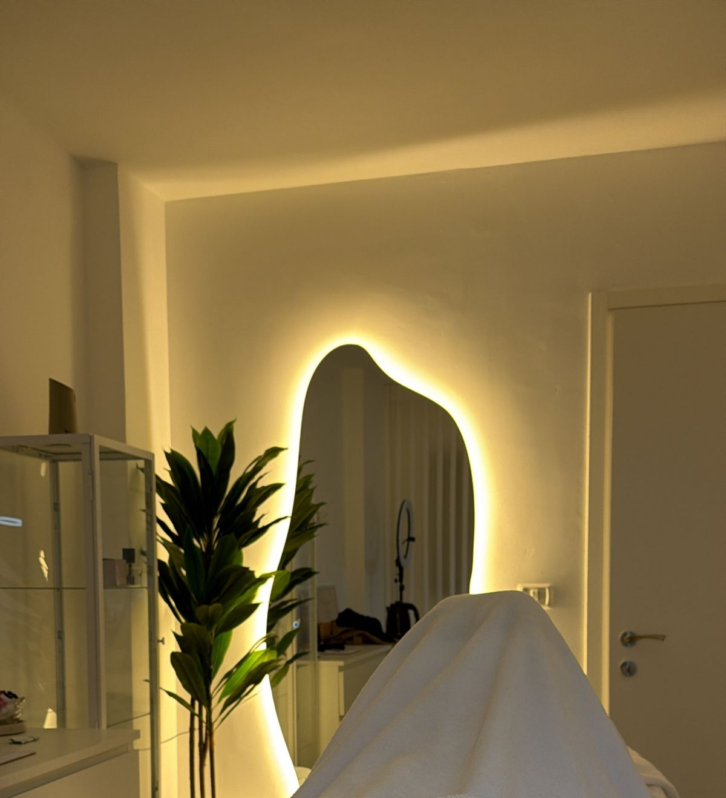
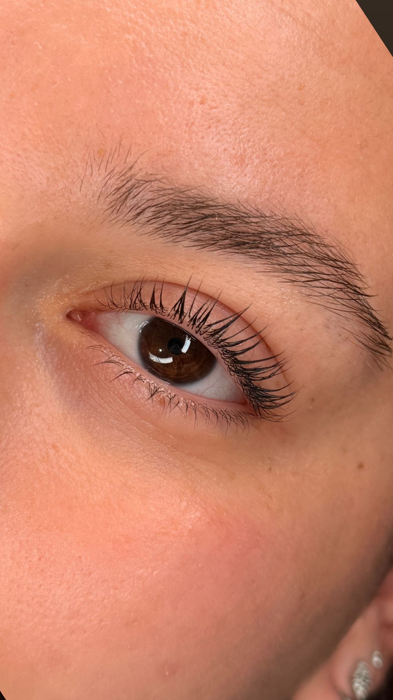
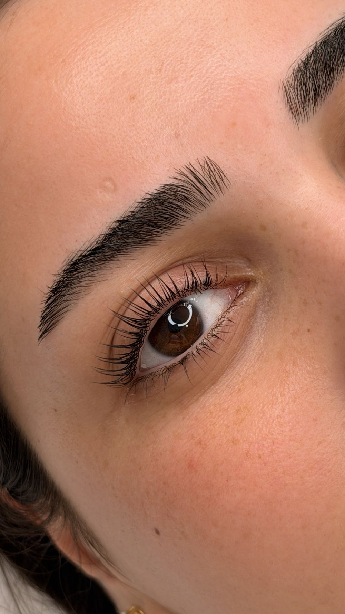
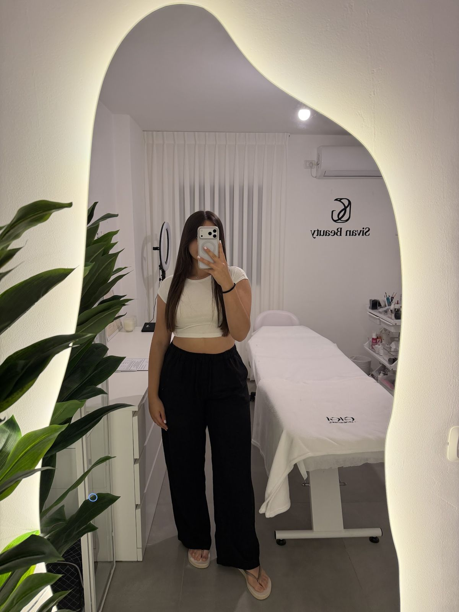

הרמת ריסיםLash lift
הריסים הטבעיים שלך, מורמים ומסודרים.Your own lashes, lifted and set.
קונספט לדוגמה שנבנה עבור Sivan Beauty – הקליניקה של סיון גדליה · זה אינו האתר הרשמי של העסקA sample concept built for Sivan Beauty – Sivan Gedalia’s clinic · This is not the business’s official website
ריסים, גבות ועורlashes, brows & skin
Sivan Beauty – הקליניקה של סיון גדליה: הרמת ריסים, עיצוב גבות וטיפולי פנים, ברחוב אצ״ל 5 בטירת כרמל.Sivan Beauty – Sivan Gedalia’s clinic: lash lifts, brow shaping and facials, at 5 Etzel St, Tirat Carmel.



תמונות מהקליניקהPhotos from the clinic
עבודה מקרוב, ריס אחרי ריס וגבה אחרי גבה.Close-up work, lash by lash, brow by brow.
מתוך התמונות של הקליניקה בגוגלFrom the clinic’s Google photos
שלושה טיפולים שרואים בתמונות ובביקורות שלה.Three treatments seen in her photos and reviews.
הריסים הטבעיים שלך, מורמים ומסודרים.Your own lashes, lifted and set.
גבה שמעוצבת לפי קווי הפנים.Brows shaped to the lines of the face.
מגבות רכות, אור עמום ושקט.Soft towels, dim light, quiet.
מראה מוארת, צמח ירוק והלוגו שלה על הקיר.A lit mirror, a green plant and her logo on the wall.
״כל כך נעים לבוא אלייך״“It’s so nice to come to you”

סיוון פשוט בחורה מתוקה, שירותית ומוכשרת. עשיתי אצלה הרמת ריסים ועיצוב גבות, ואין יום שאני לא מקבלת מחמאות על איך שזה יצא! עבודה מדהימה, נקייה סטרילית, ובנוסף אשת שיחה מדהימה
Sivan is simply a sweet, helpful and talented woman. I had a lash lift and brow shaping with her, and there isn’t a day I don’t get compliments on how it turned out! Amazing work, clean and sterile, and a wonderful person to talk to
אני יודעת רק דבר אחת שהגעתי פעם ראשונה אצלך בכיתי מי רוב התרגשות כי סוף סוף אחרי 30 שנה שאני עושה גבות לא היה לי כזה מושלם. וכל כך נעים לבוא אלייך וליראות אותך לדבר איתך את בחורה מדהימה ויש לך ידיי זהב
I only know one thing: the first time I came to you I cried with excitement, because finally, after 30 years of doing my brows, I’d never had them this perfect. And it’s so nice to come to you, to see you and talk with you You’re an amazing woman and you have golden hands
אני לקוחה קבועה בקליניקה של סיון וכל פעם מחדש יוצאת מרוצה! היחס תמיד חם, אישי ומקצועי, האווירה נעימה ומפנקת ותמיד כיף להגיע. סיון מקסימה, סבלנית, קשובה ומשקיעה מכל הלב בכל טיפול.
I’m a regular at Sivan’s clinic and every time I leave happy! The treatment is always warm, personal and professional, the atmosphere is pleasant and pampering and it’s always fun to come. Sivan is lovely, patient, attentive and puts her whole heart into every treatment.
סיוון המקסימה. מקצועית. מומחית בשזירת ריסים. יחסי אנוש מעולים. משתמשת בחומרים מעולים. אני סומכת עליה ומרוצה צמנה מאוד. תודה אורלי ב.
Lovely Sivan. Professional. An expert in lash curling. Excellent people skills. Uses excellent materials. I trust her and I’m very happy with her. Thank you, Orly B.
כיף לבוא לקליניקה של סיון. היא מקסימה, נעימה ומקצועית מאוד. יש לה עבודה נקייה ומדוייקת, פשוט תענוג
It’s a pleasure to come to Sivan’s clinic. She’s lovely, pleasant and very professional. Her work is clean and precise, simply a delight
בוחרים טיפול ויום, וההודעה נכתבת לבד.Pick a treatment and a day; the message writes itself.
ברחוב אצ״ל 5 בטירת כרמל. המפה למטה בדף.At 5 Etzel St, Tirat Carmel. The map is further down the page.
ראשון עד חמישי 9:00–20:00, שישי 9:00–13:00. בשבת סגור.Sunday to Thursday 9:00–20:00, Friday 9:00–13:00. Closed on Saturday.
בביקורות כותבים על הרמת ריסים ועיצוב גבות, ובתמונות רואים גם טיפולי פנים. על כל השאר אפשר לשאול את סיון.Reviews mention lash lifts and brow shaping, and her photos show facials too. Ask Sivan about anything else.
שולחים לסיון הודעה בוואטסאפ, או מתקשרים ל-054-653-7748.Send Sivan a WhatsApp message, or call 054-653-7748.
אצ״ל 5, טירת כרמל5 Etzel St, Tirat Carmel